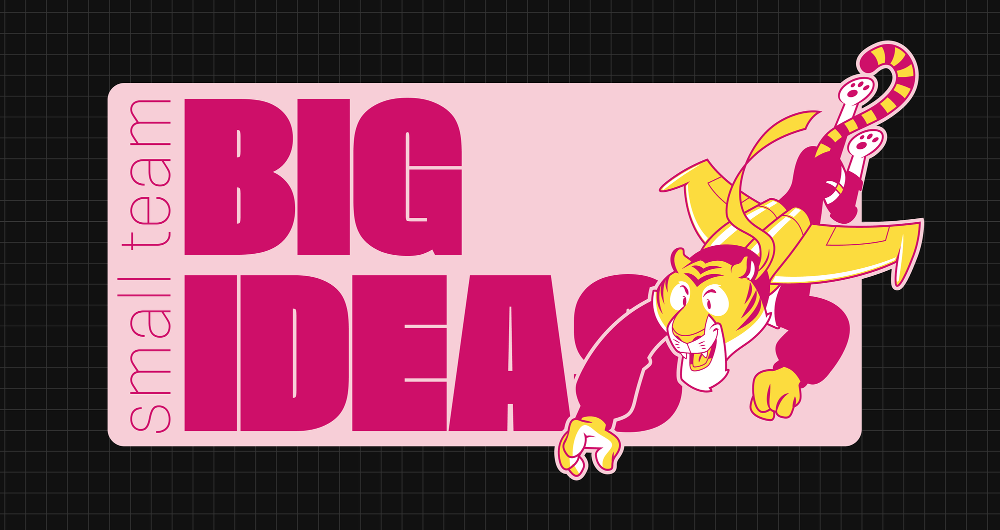

Birdie Tiger
Planted: Mar 27, 2026. Last tended:
web design
agency
figma
webflow
2022
Creating an agency... in a week
Internal projects can be great: total freedom and ownership. But sometimes, it also comes with the confidence of building something awesome in just a couple days. This was the case with Birdie Tiger: a newborn sister agency that needed to have a brand and landing page in a week in order to start showing it at upcoming conferences and events, so we set a plan to have everything we needed in five days:
Day 1
Exploring visual paths
Day 2
Defining the landing page
Day 3
Going into Webflow
Day 4
More Webflow...
Day 5
Completing the brand

Exploring the options
The idea of this agency was for it to be young, experimental and almost naively confident. Therefore, we set to explore three distinct fields of styles:

Vibrant and colorful visuals highlighting the energetic spirit of the young agency.


Vibrant and colorful visuals highlighting the energetic spirit of the young agency.


Vibrant and colorful visuals highlighting the energetic spirit of the young agency.

About the tiger
Before this project reached me, some attempts were made to create a brand for this company, which resulted in the tiger illustration you’ll see in all these samples, originally created by Diego Tapié. The original material were not aligned to the trendy and youthful vision for the company, but the stakeholders wanted to include the tiger illustration in some way. So, I experimented with different approaches, colors, and styles to make it look updated and modern.

Selecting final path
Together with the C-team, we decided on going the more vibrant and experimental way, and completing the rest of the landing page following one of the tests on that category. This proved a bit of a challenge because there wasn’t much to show about this company but a few design shots. So, we made a short page explaining mostly the visions and ways of working of the newly found team, all of this through a humorous and witty identity.

Wrapping up
Once we moved the landing page to Webflow... in one day and a half, we still had some more work to do with the brand. SO we filled all the gaps in the assets needed for this company to have a visible face everywhere it was needed.